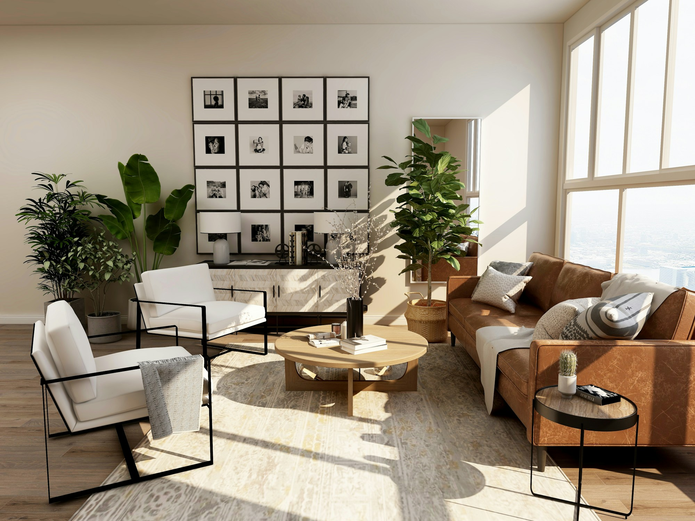
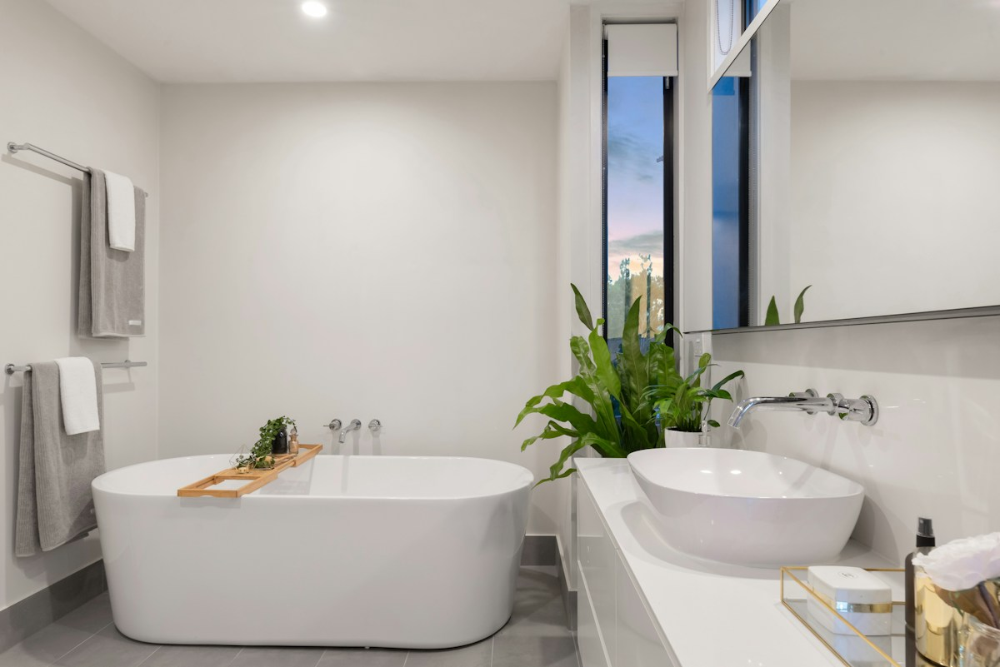
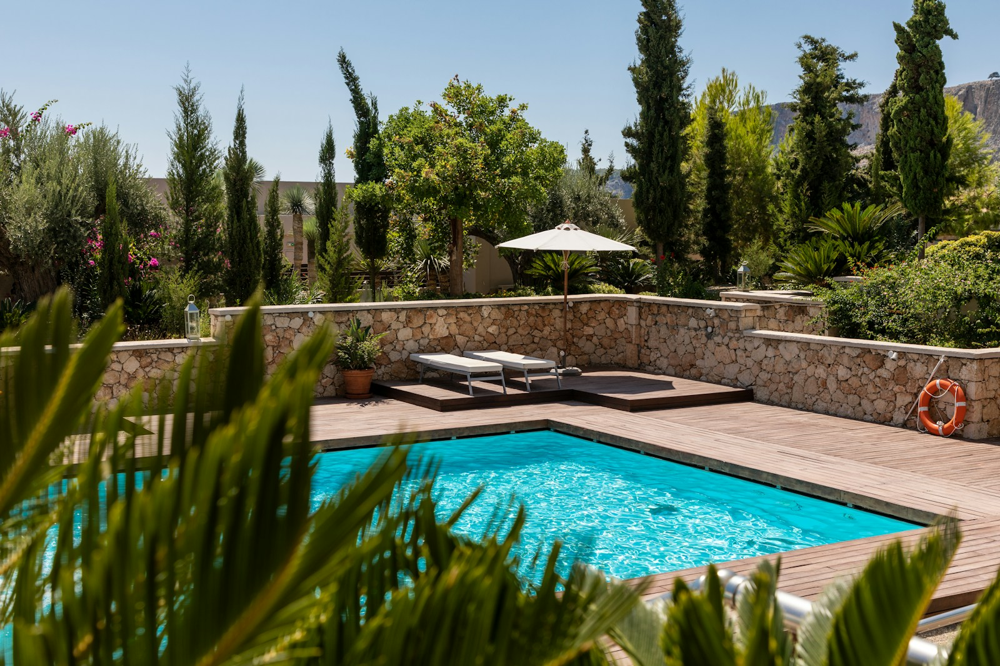

For every space,
a distinctive finish
Explore our solutions and find the right service for your project

01Porcelain supply & installation
Refined materials and precise installation for spaces that balance beauty and practicality
↗
02Ceramic supply & installation
Coordinated finishes for bathrooms, kitchens and everyday spaces
↗Floor & wall finishes
Connected details that give each space its own character
↗
04Swimming pool finishes
Materials and details that complete your outdoor space
↗